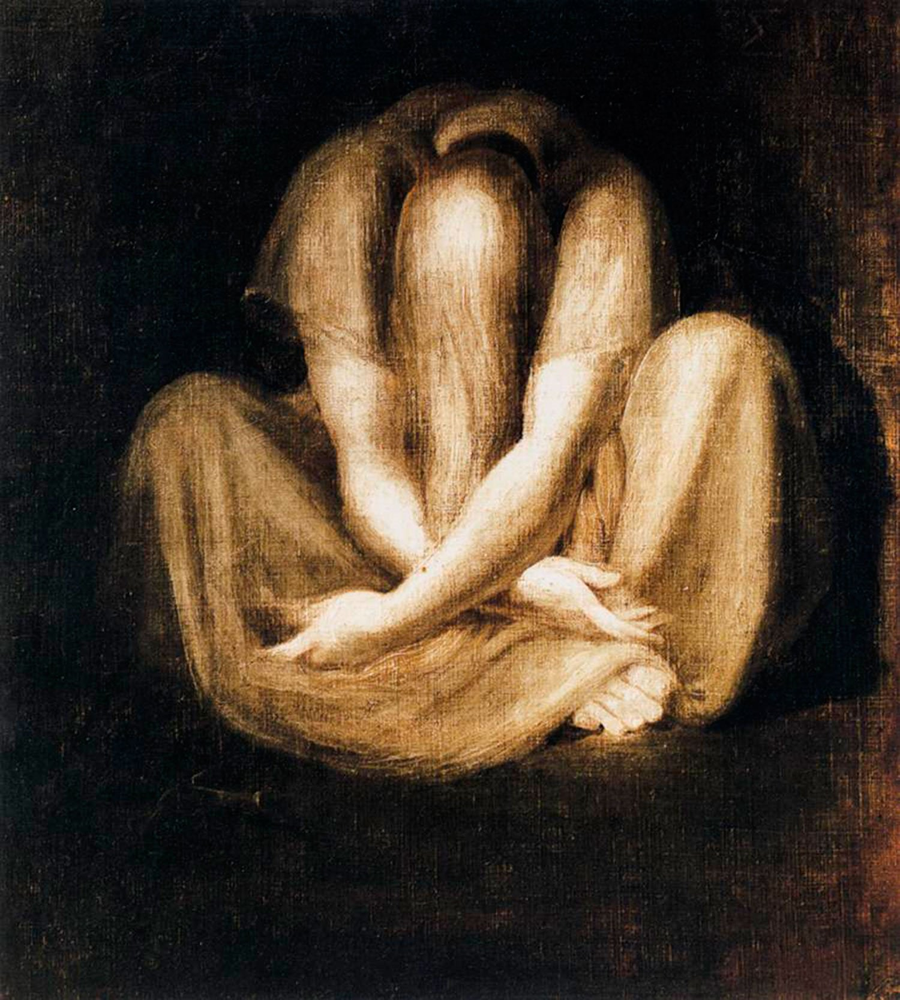
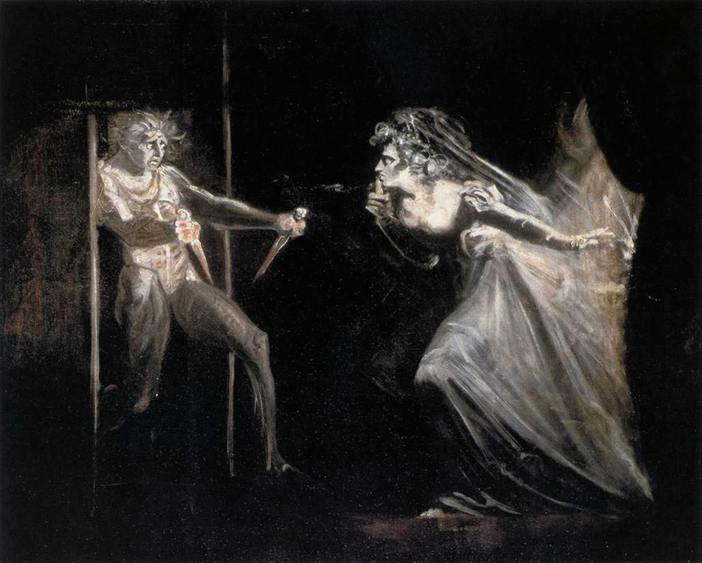
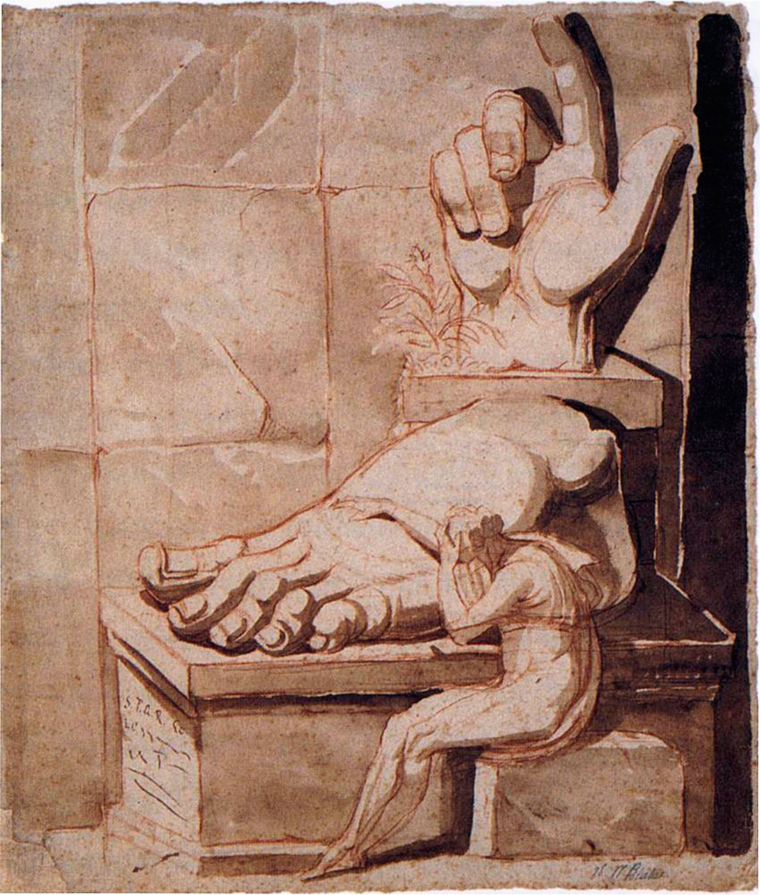
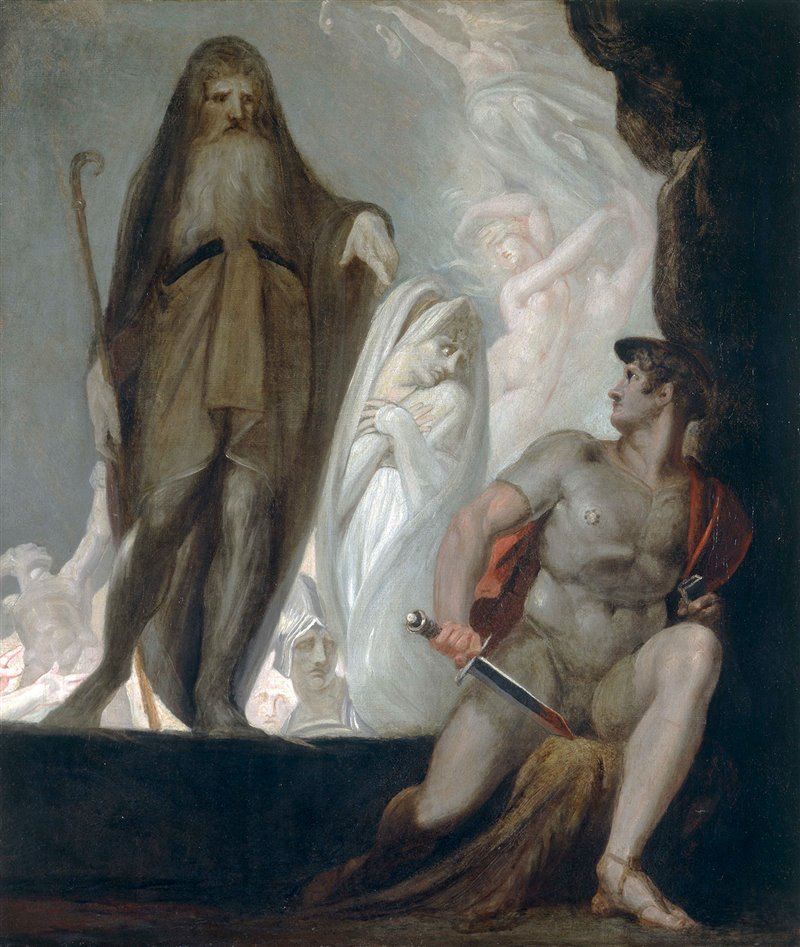
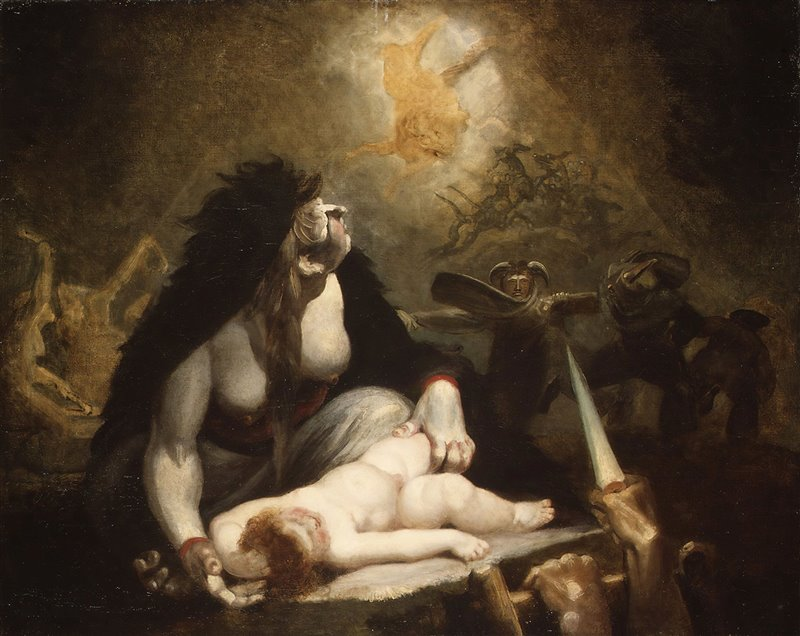
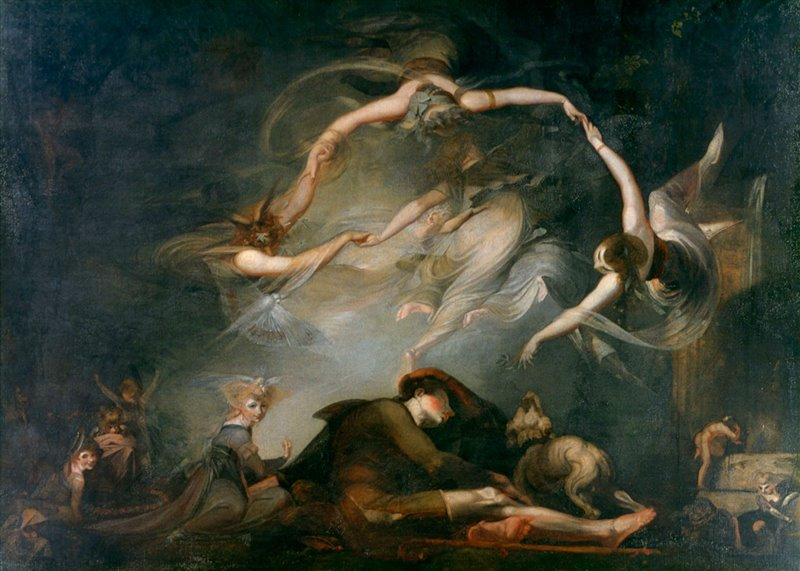

Johann Heinrich Füssli
Johann Heinrich Füssli (Zurigo, 7 febbraio 1741 – Putney Hill, 16 aprile 1825) è stato un letterato e pittore svizzero, che esercitò la sua attività principalmente in Gran Bretagna, dove è conosciuto come Henry Fuseli. Abilissimo disegnatore, trasse ispirazione dai suoi studi sull'antico e sui neoclassici, ma scelse soggetti di ispirazione romantica, ricchi di fascino e di immaginazione, di gesti violenti e atmosfere magiche, spesso tratti dagli episodi più visionari delle grandi opere poetiche, precorrendo alcuni temi dell'Espressionismo e del Surrealismo.
     Homepage